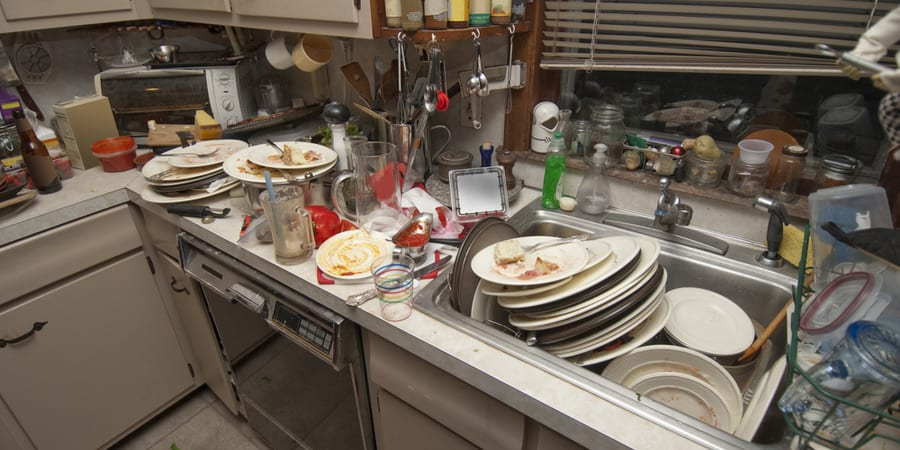

FCE 2026 - Test 10
Reading and Use of English (75 minutes)
Listening (about 40 minutes)
Each recording is played twice. Use headphones and read the questions before you listen.
Writing (80 minutes)
Part 1 - Essay (compulsory)
In your English class you have been discussing where children should grow up. Your teacher has asked you to write an essay for homework.
Write an essay using all the notes and giving reasons for your point of view.
Notes:
Write about:
1. education and facilities
2. safety and freedom
3. ___________ (your own idea)
Write your essay in 140 - 190 words.
Part 2 - Choose ONE task
Write an answer to one of the questions (a - c) in this part. Write your answer in 140 - 190 words in an appropriate style.
(a) Article: You see this announcement on a technology blog: The Best Invention! What do you think is the most useful invention of the last 50 years? Write an article telling us what the invention is, how it has changed people's lives, and why it is more important than others.
(b) Email: Your English-speaking friend Taylor is visiting your country next month for a large outdoor music festival. Write an email to Taylor giving advice on what kind of clothes to pack, how to get to the festival site, and one local dish they absolutely must try.
(c) Review: You have just finished reading a book that you simply could not put down. Write a review of the book for an English-language magazine. Briefly explain the story, describe what made it so engaging, and say who you think would enjoy reading it.
Sending opens your email app with your text. Very long texts are copied to the clipboard so you can paste them.
Speaking (14 minutes)
Practise with a partner or teacher. The real test lasts about 14 minutes.
Part 1 - Interview (2 minutes)
- What kind of holidays do you enjoy the most?
- Do you think you will have the same friends in ten years' time?
- What is your favourite way to relax after a busy day?
- How important is technology in your daily life?
Part 2 - Long turn (1 minute each)
Candidate A: Compare the pictures and say how the people might be feeling in these different workplace situations.
Candidate B: Compare the pictures and say what the challenges of cooking in these two different environments might be.
Candidate A's pictures: Workplace Environments
Compare the pictures and say how the people might be feeling in these different workplace situations.
Candidate B's pictures: Cooking Environments
Compare the pictures and say what the challenges of cooking in these two different environments might be.

Part 3 - Collaborative task (3 minutes)
What is the most important factor in keeping healthy? Discuss the ideas below, then decide which TWO are the most essential for a long life.
- eating a balanced diet
- getting enough sleep
- exercising regularly
- maintaining a good social life
- reducing daily stress
Part 4 - Discussion (4 minutes)
- Do you think governments should do more to encourage people to eat healthily? How?
- Why do you think so many people struggle to make permanent changes to their lifestyle?
- Some people argue that modern medicine relies too heavily on pills rather than preventing illness. Do you agree?